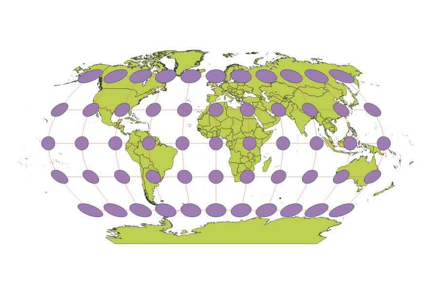
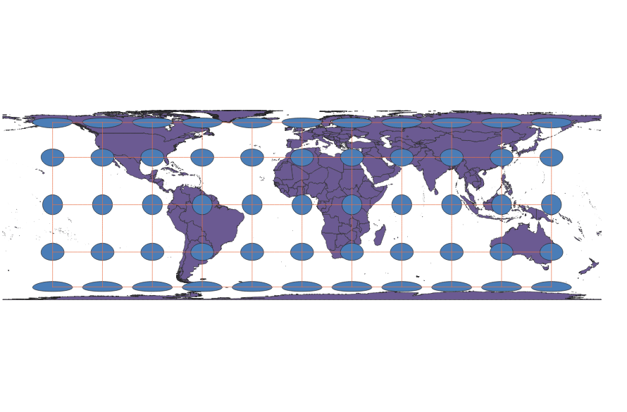
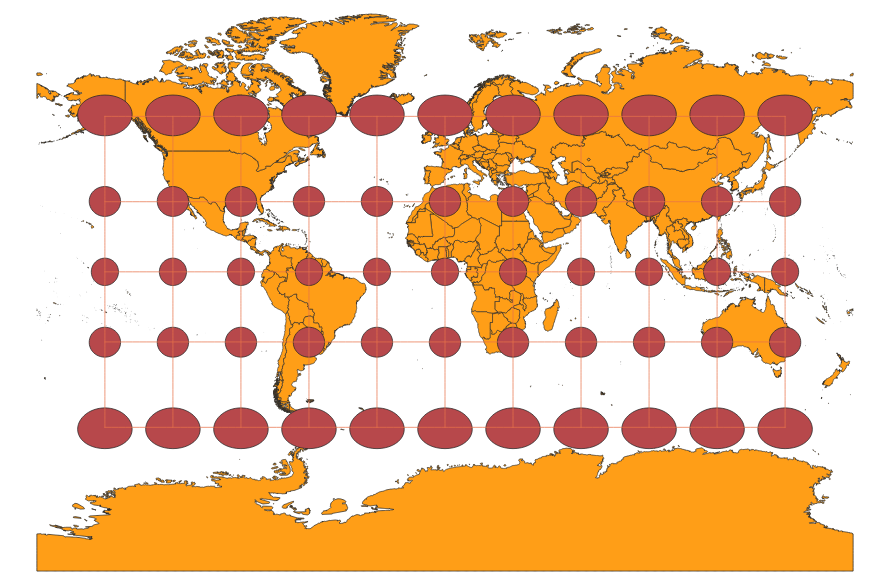
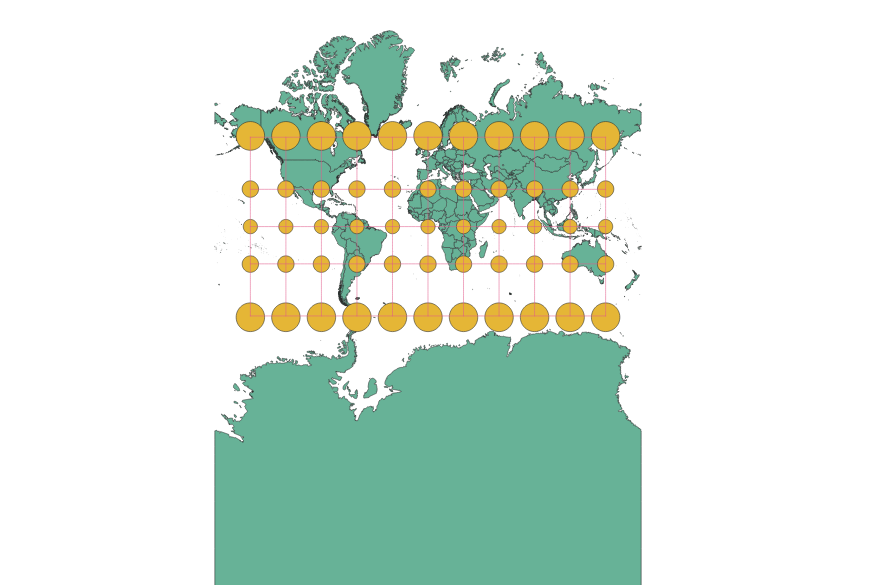
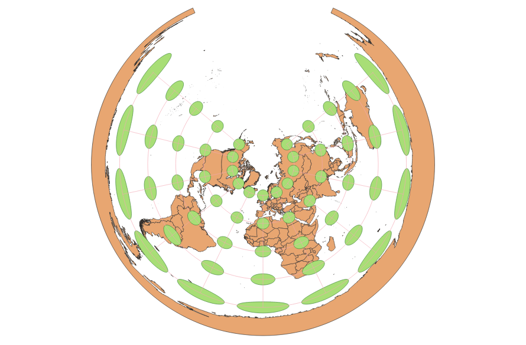
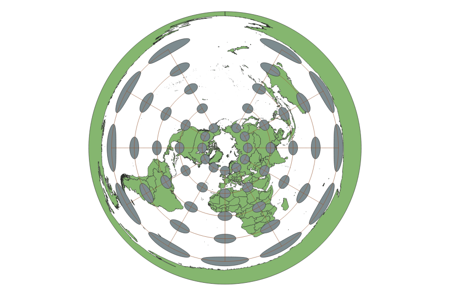
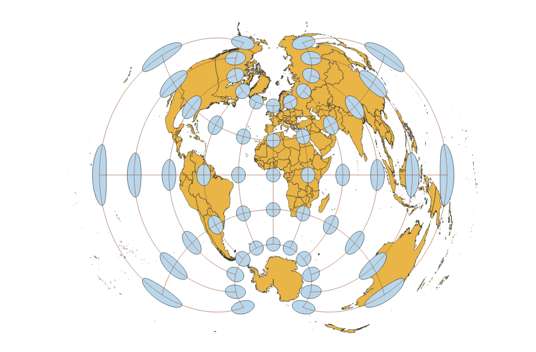

In this project I learned how to display images in different projections
Describe in your own words how you displayed the map in different projections using QGIS
You can write a paragraph here
Sphere Projection
The sizes and shapes on this projection seem fairly accurate until you get closer to the poles, where there is some distortion.

Cylindrical Equal Area Projection
Appears greatly disorted at the poles, stretched horizontally throughout most of the map.

Cylindrical Projection
Less stretched at the poles than the Equal Area Cylindrical Projection, but area is not well preserved.

Pseudo Mercator Projection
This projection also does a very poor job of preserving area. Size of continents increases greatly at the poles.

Conical Projection
Part of the Earth appears to be missing and the areas at the poles are greatly distorted.

Azimuthal Equidistant Projection
Similarly does a poor job of portraying areas and there is a lot of stretching of Antarctica.

Polyconical Projection
Does a decent job of preserving area, especially at the poles as compared to other projections. However, this projection does have large amounts of distortion, but mainly in areas over the ocean.

Now, you should add the following projections on your own:
EPSG: 3857, 53018, 54034, 54027, 102016, and two additional projections that you choose.
Data used for this project
Download Natrual Earth 1:10m Cultural Vector